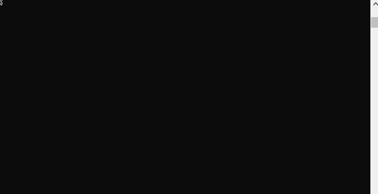

kita127's Page
About

名前 : kita127
職業 : 組み込みソフト屋さん
好きな言語 : Haskell、Go
My works
過去に作った作品
Haskey
LinkHaskell 製のインタプリタ言語.
字句解析, 構文解析系のライブラリを使用せず, 基本的には Haskell の標準ライブラリ(Prelude) だけを使用し作成した自作プログラミング言語. 元ネタは書籍「Go言語でつくるインタプリタ」.
goconvcase
LinkGo 言語の変数名, 関数名などのケースを変換するツール.

スネークケース → キャメルケース, キャメルケース → スネークケースなどの相互変換が行える.
キャメルケース推奨の Go 言語において誤ってスネークケースを使用してしまい悲しい思いをしたため作成.
GitHub
https://github.com/kita127作品は GitHub にまとめています.
Blog
https://kita127.hatenablog.com/はてなブログに技術ブログを書いています.
Link
twitter : @kita1271